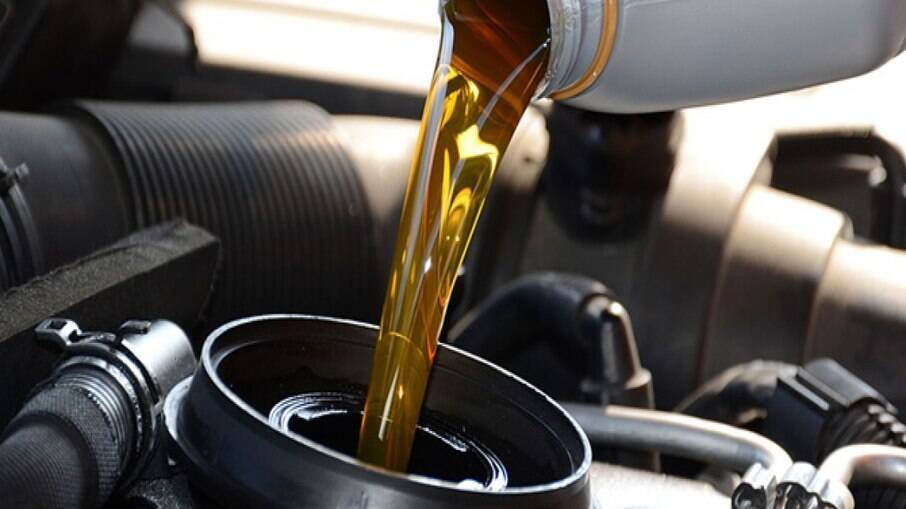

Serviços Oferecidos:
Manutenção Preventiva
A manutenção preventiva automotiva é um conjunto de procedimentos realizados regularmente em um veículo com o objetivo de evitar o desgaste prematuro de peças, garantindo assim um funcionamento seguro e eficiente. Esse tipo de manutenção é fundamental para prolongar a vida útil do automóvel e evitar problemas mecânicos mais sérios no futuro.
Injeção Eletrônica
A injeção eletrônica é uma tecnologia crucial nos sistemas automotivos modernos, desempenhando um papel fundamental no controle preciso da mistura ar-combustível nos motores de veículos.
Eletríca Automotiva Geral
O sistema elétrico automotivo é responsável por alimentar todos os componentes elétricos de um veículo. Um dos aspectos fundamentais da elétrica automotiva é o sistema de partida e carregamento, responsável por fornecer energia elétrica para o motor de partida e recarregar a bateria do veículo.
Painéis de Instrumento
O painel de instrumentos, fornece informações essenciais sobre o funcionamento do carro. É projetado para oferecer uma visão rápida das condições de condução, permitindo que o condutor monitore diversos aspectos do veículo em tempo real.
Motor
Um motor de carro é o coração do veículo, responsável por gerar a energia necessária para movimentá-lo. Existem vários tipos de motores de carro, sendo os mais comuns os motores a combustão interna, que podem ser divididos em motores a gasolina e motores a diesel.

Câmbio Manual
Os carros com câmbio manual têm suas próprias características e vantagens, assim como necessitam de cuidados específicos para garantir um bom desempenho e durabilidade.
Sistema de Freios
O sistema de freio de um carro é uma das características mais vitais para a segurança dos motoristas, passageiros e pedestres nas estradas, composto por diversos componentes intricados, o sistema de freio moderno evoluiu ao longo dos anos para oferecer eficiência, controle e confiabilidade aprimorados.
Serviço de Suspensão
A suspenção de um veículo desafia a gravidade e suaviza as irregalularidades do terreno, proporcionando uma experiência de condução confortável e segura. No entando, com o tempo e o desgaste, os componentes da suspensão podem sofrer danos, comprometendo tanto o conforto do motorista e dos passageiros quanto a segurança geral.
Alinhamento, balanceamento e Cambagem
Quando se trata de manter um veículo em perfeitas condições de funcionamento e segurança, três elementos essenciais vêm à mente: alinhamento, balanceamento e cambagem. Embora frequentemente negligenciados, esses aspectos desempenham um papel vital na garantia de uma experiência de condução suave, economia de combustível e durabilidade dos pneus.